ПОСТЕРИ ТА ПРОМО-АРТ
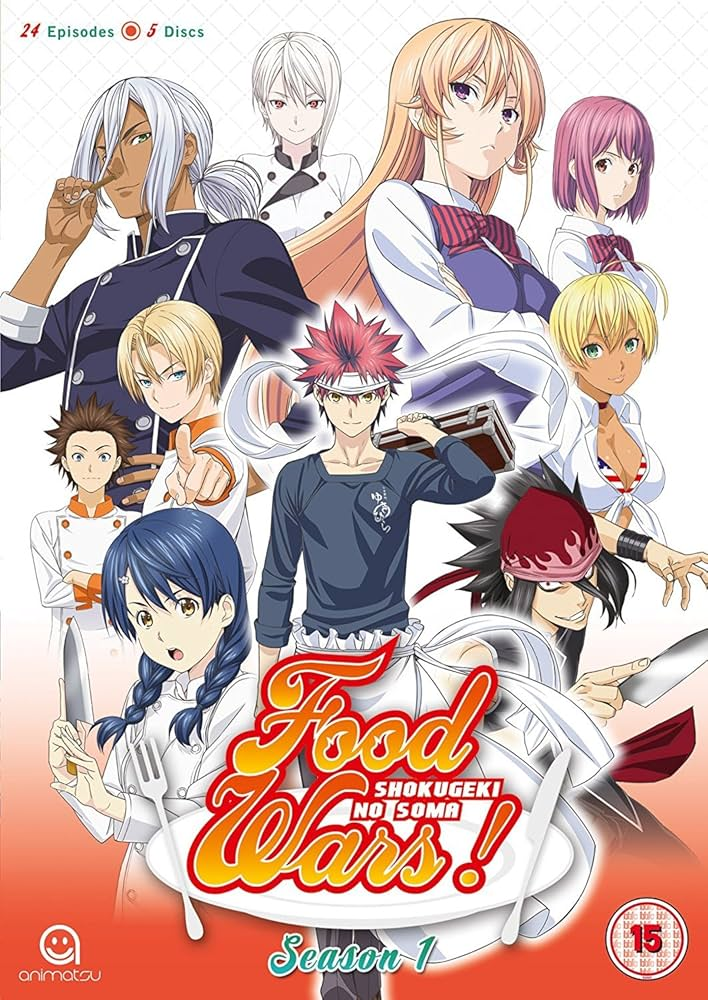Перший сезон — знайомство із Сомою та академією Тоцукі.
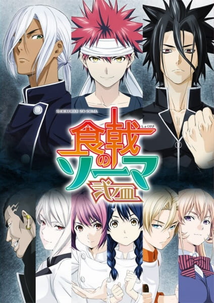Другий сезон — битви на кулінарному фестивалі.
НАЙСМАЧНІШІ СЦЕНИ
- Омурайс Соми 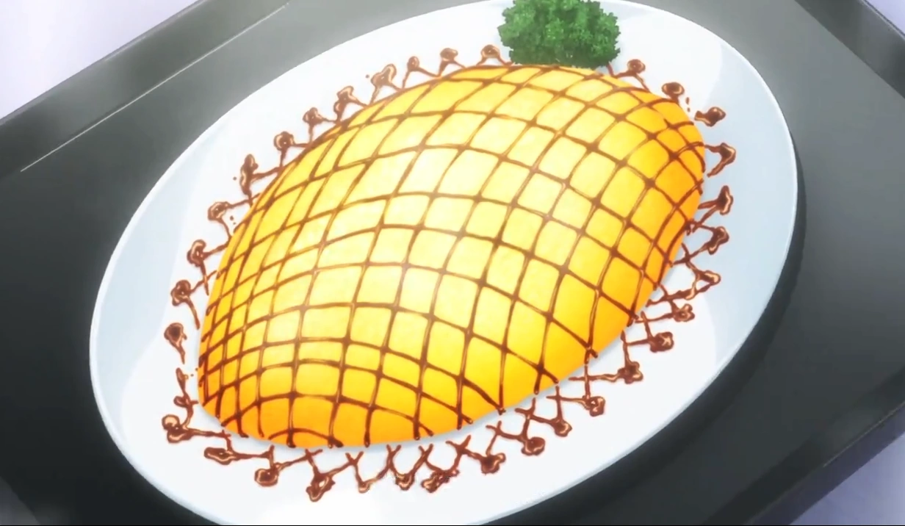
- Десерт Еріні 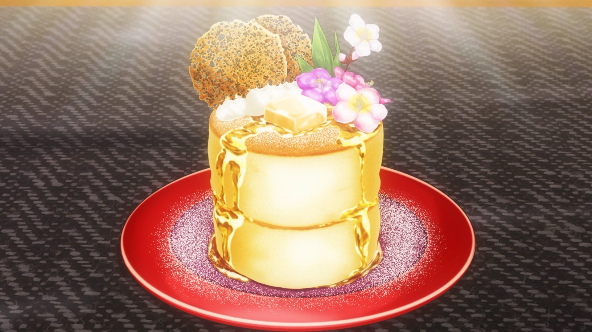
- Бенто Аліси 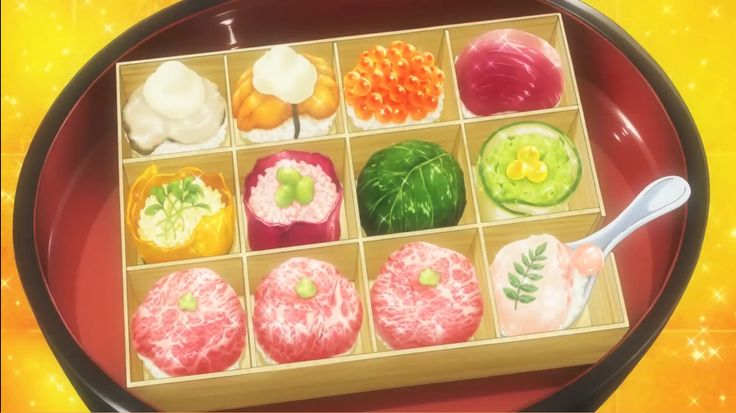
- Онігірі Тадокоро 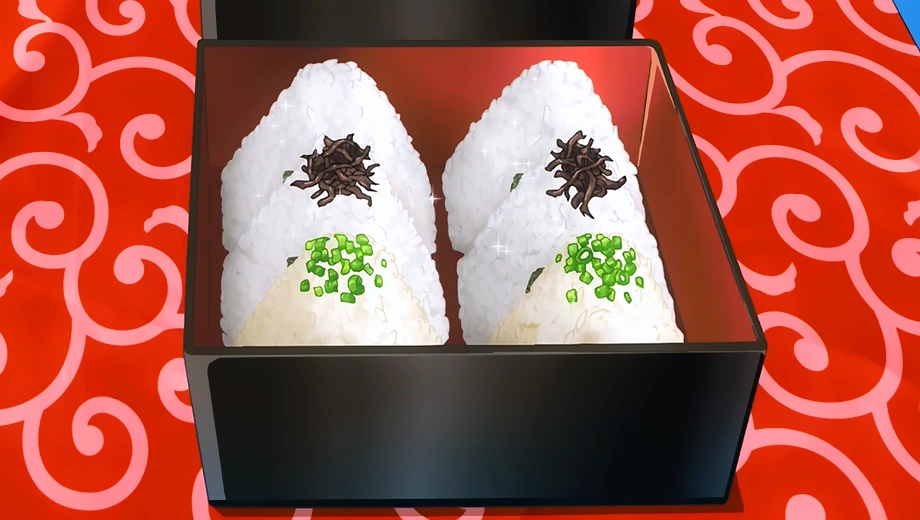
- Карі Хайами 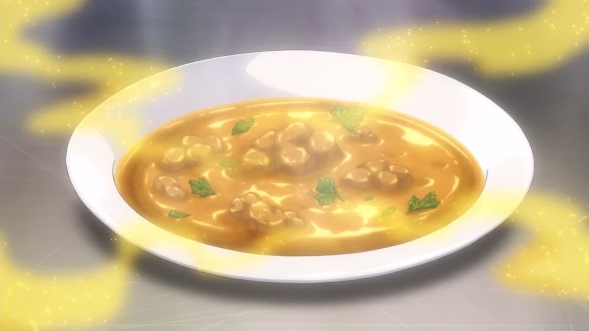
ЩО ВИ ЗНАЙДЕТЕ В ГАЛЕРЕЇ?
У цьому розділі ми зібрали все найцікавіше з аніме “Кулінарні поєдинки Соми”: від офіційних постерів та смачних страв до косплею й епічних двобоїв.
Галерея створена для того, щоб ще раз зануритися у світ кулінарних битв, пригадати улюблені моменти та відкрити для себе щось нове.
Обирайте колонку — і вперед у світ смаків та емоцій!
КОСПЛЕЇ
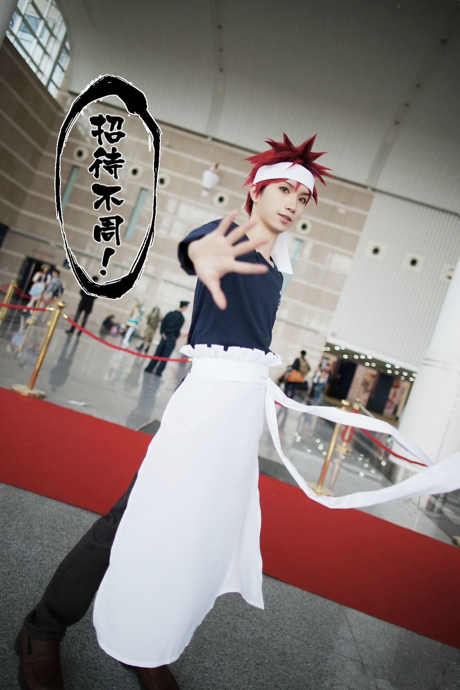Косплей Соми Юкіхіри.
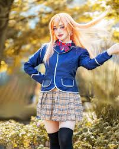Косплей Накірі Еріні.
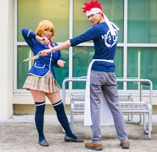Парний косплей.
ФАН-АРТИ
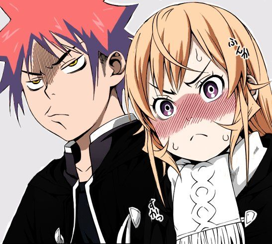 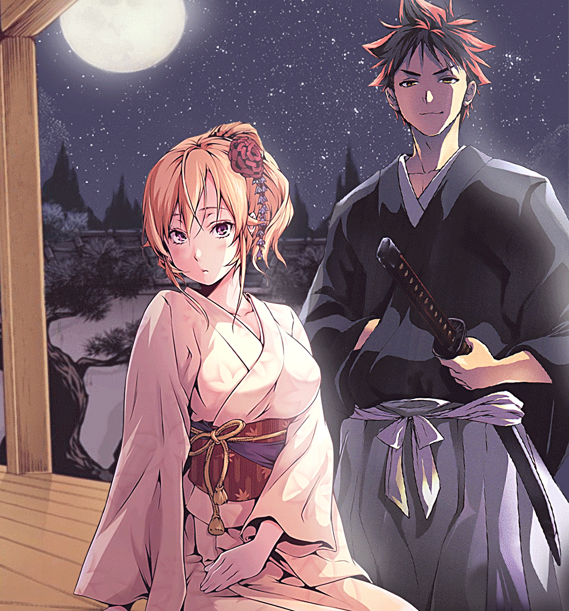 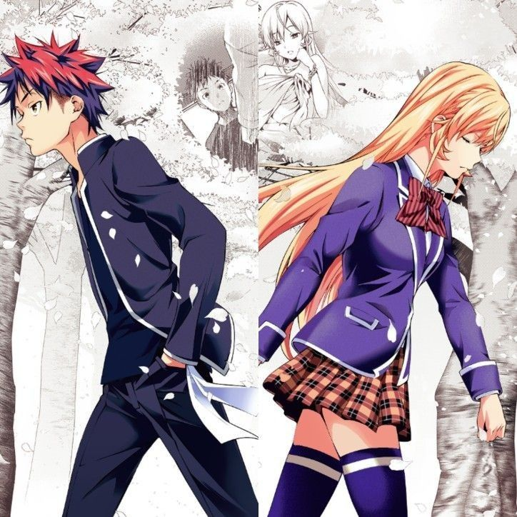 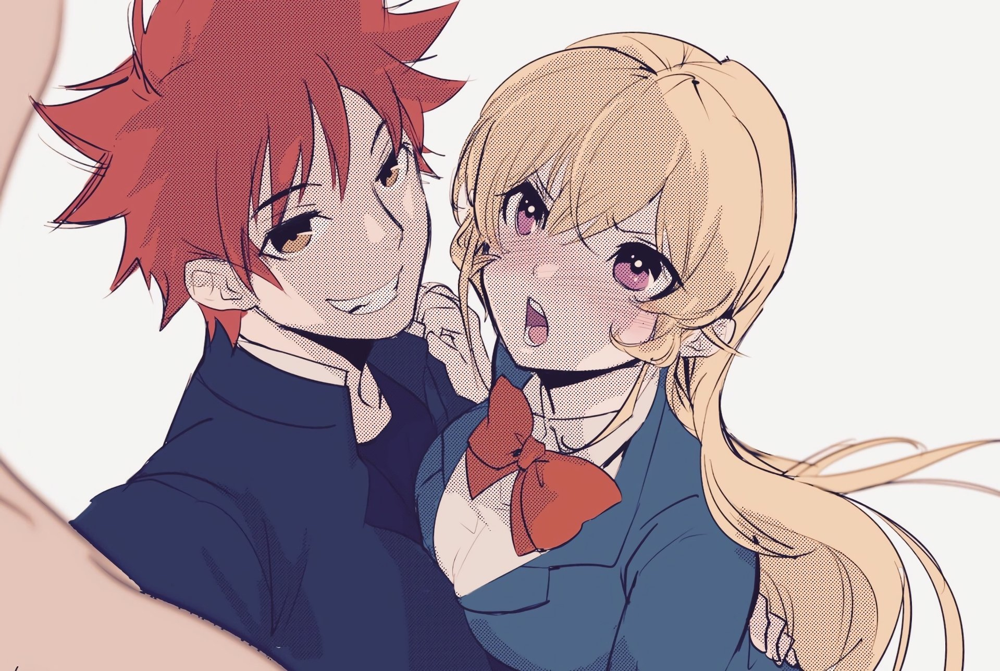